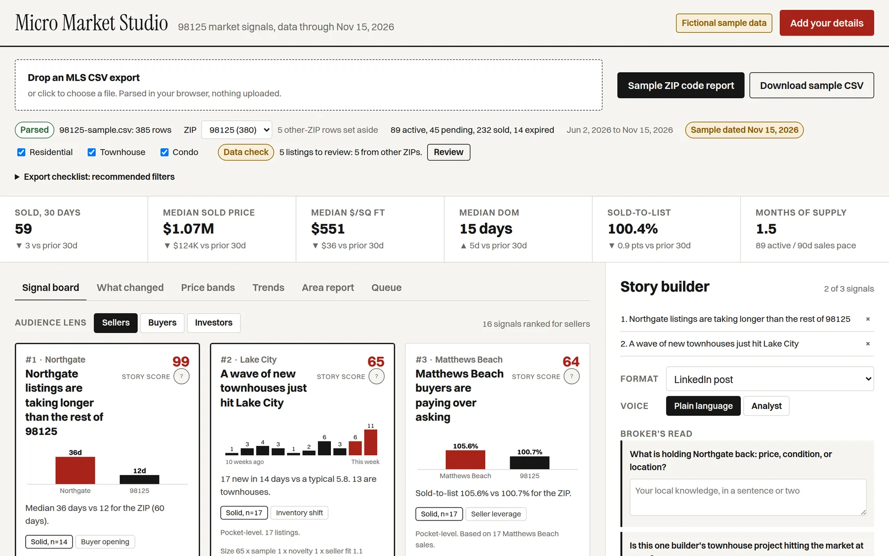
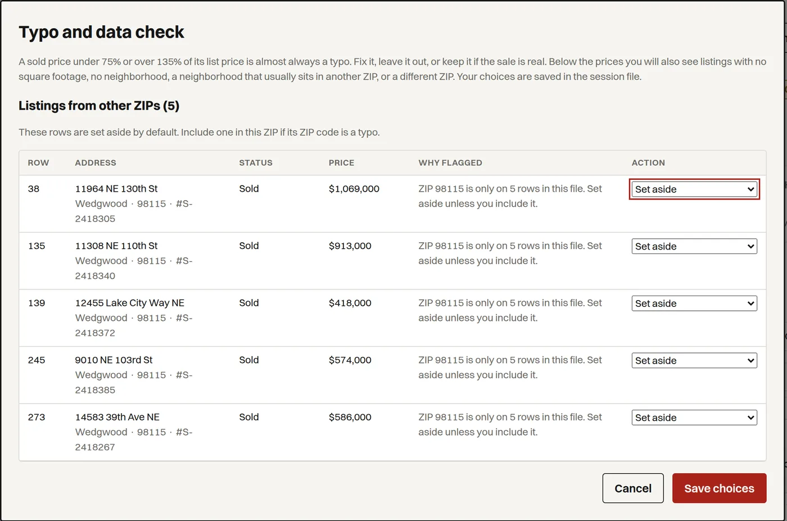
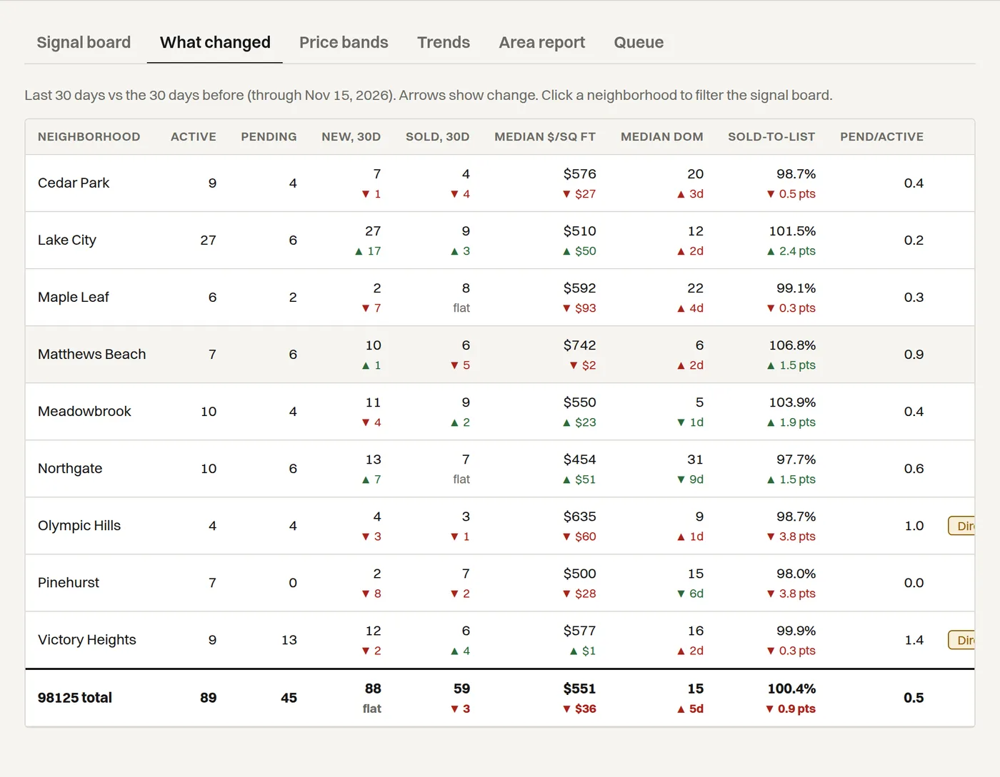
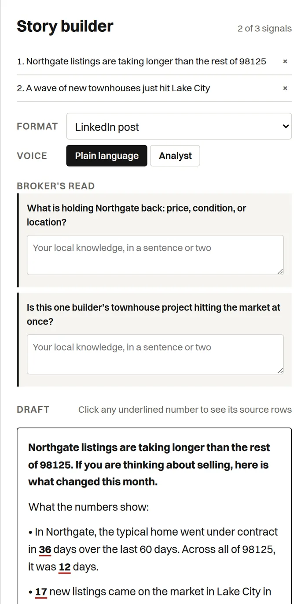
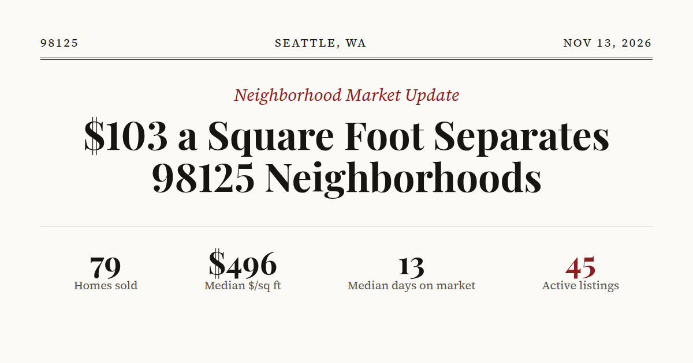
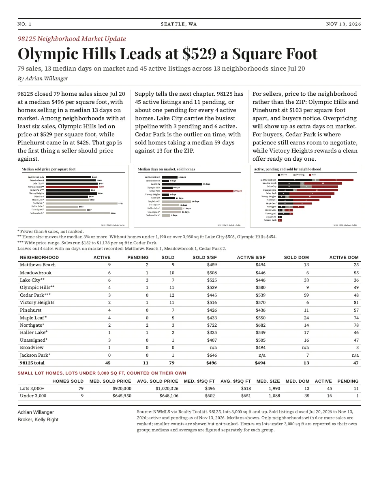
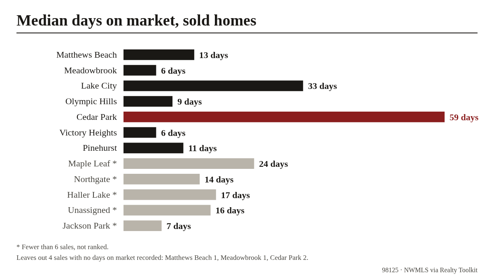
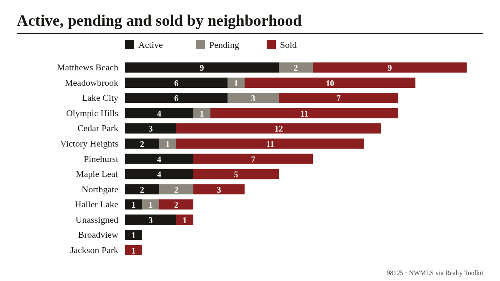

Empowering broker trustworthiness
Your MLS data, turned into value reports a client can check.
Micro Market Studio reads one ZIP of MLS data in your browser, ranks what changed, and drafts the stories, graphics and neighborhood reports you send. Every number links back to the listings behind it, and nothing goes out until you review it.
No install. No upload. Your CSV stays on your computer.

From MLS data to value reports
Raw export in. Reviewed, sourced reports out.
The studio does the counting so you can do the explaining. Each step is a written rule you can read, and the same file always gives the same report.
- 01
Export
Pull a Realty Toolkit or NWMLS CSV for one ZIP: active, pending, pending inspection, sold and expired. A 730 day sold window unlocks year over year trends.
- 02
Parse
The file is read in your browser. Statuses are sorted, property types are split by Style Code, small lot homes get their own group, and a freshness badge tells you how old the export is.
- 03
Check
Suspicious sold prices, missing square footage, blank neighborhoods and stray ZIPs are flagged. You decide what stays in.
- 04
Rank
Nine signal tests run on the clean data. Each finding gets a Story Score and a sample label, ranked for sellers, buyers or investors.
- 05
Publish
Pick up to three signals and draft a post, a broadsheet story, a carousel or a full neighborhood report. You preview it, then you post it.
Stakeholder value tracking
One export. A different answer for everyone at the table.
The same clean data answers different questions depending on who is asking. Pick a stakeholder to see what they need, which numbers the studio tracks for them, and what you hand them.
Is now the right time, and what is my home worth in this pocket?
What you hand themA seller lens post or broadsheet story, a neighborhood report with price per square foot by pocket, and a price band read for their range.
| KPI | What it tells you | Where it shows up |
|---|---|---|
| Sold, 30 days | Closed sales in the last 30 days against the 30 before. | Headline bar |
| Median sold price | The middle sale, so one estate sale does not move the story. | Headline bar, Area report |
| Median $/sq ft | Price per square foot, compared within the same property type. | Headline bar, Area report, Fig 1 |
| Median days on market | How long homes sat before going under contract, ZIP and pocket. | Headline bar, signals, Fig 2 |
| Sold to list | Sold price as a share of list price, and the share that sold over asking. | Headline bar, signals |
| Months of supply | Active listings over the recent sales pace. Under 2 tight, 2 to 4 balanced, over 4 loose. | Headline bar, Price bands |
| Pending per active | How picked over a neighborhood's inventory is, against the ZIP. | Absorption signal |
| Price cuts | Where reductions are clustering by price band. | Price cut signal, Price bands |
| New listings | Fresh supply in 14 days against the prior 8 week pace. | New listing surge signal |
| Year over year | 12 months against the prior 12, and 3 against 3, beside the national 30 year rate. | Trends |
Empowering broker trustworthiness
Every number has receipts.
Clients have seen enough confident market talk. What they rarely see is the work. The studio puts the work one click away.
In Northgate, the typical home went under contract in days over the last 60 days. Across all of 98125, it was days.
Source rows appear here
In the studio, every underlined figure in a draft opens the listings it was counted from.
Fictional sample rows, as shown in the studio.
Source rows behind every figure
Click any underlined number in a draft and see the address, listing number, type, status and prices it came from.
Sample labels in plain sight
Solid means 12 or more sales. Directional means 6 to 11. Held back means under 6, and it stays off the board. Solid is a sample size label, not a promise of certainty.
Guard lines on every card
Short cautions travel with each signal: "Pocket level. Small samples swing on mix." or "Stock ratio, not contract speed."
Footnotes the reader can follow
In area reports, one star means under 6 sales, two means home size moves the median 3% or more, three means the top price per square foot is 3 times the lowest.
Your name on the work
Exports stay locked until you add your name, brokerage and contact, so every report carries a byline and a methodology note.
Transparency
The ranking is a formula you can read.
Story Score ranks publishing opportunity, not truth. It multiplies four things you can see on every card. Move the inputs and watch the same math the studio runs.
Size 100 x sample 1 x novelty 1 x seller fit 1.2
Score = size x 90 x sample x novelty x audience fit, between 1 and 99. Scores of 60 and up show in red. Example uses the Northgate days on market signal and its audience fits.
Human in the loop
The studio counts. The broker decides.
Software is good at sorting 400 rows. It is not good at knowing that a sale was a family transfer or that one builder dropped six townhouses at once. Every step that needs judgment stops and waits for you.
- Studio flags
Typo and data check
A sold price under 75% or over 135% of list is held out of every number until you choose Fix price, Leave out or Keep. Rows from other ZIPs are set aside unless you include them. Odd price per square foot is marked Check, as advice only.
- You choose
Pick the story
The board ranks. You pick up to three signals that match what you are seeing on the ground, and you can switch the audience lens before you do.
- You add
Broker's read
Each signal comes with a question only a local broker can answer, like "What is holding Northgate back: price, condition, or location?" Your answer goes into the draft.
- Studio checks
Draft checks
Article drafts are checked for paragraph length, dashes, addresses and agent names, and a byline before you copy them.
- You publish
Preview, then post yourself
Nothing posts automatically. The Queue is a planner for what you will post and when, and Content memory lowers the score of stories you already told.

$48,108
In one 98125 export, two mistyped sold prices pushed the average sale from $952,859 to $1,000,963. A report that skips this step tells a client the wrong story with full confidence.
Intelligence
Nine tests, run on every export.
The signal board looks for change worth talking about at the ZIP level and in each neighborhood, then sorts it by how useful it is to the audience you pick.
ZIP level
- Sold to list ratio
- Days on market
- Share sold over asking
Last 30 days against days 31 to 90.
Neighborhood level
- Days on market against the ZIP
- Sold to list against the ZIP
- Absorption, pending per active
- Price per square foot change
60 day windows, so small pockets have enough sales.
Supply
- Price cut clustering by band
- New listing surge
14 days against the prior 8 week pace.
The last 30 days against the 30 before, neighborhood by neighborhood, so you can see where the ZIP average is hiding a split.

Studio screenshots use fictional sample data.
Stories, social and graphics
One set of numbers. Every channel you use.
The Story builder turns up to three signals into a draft in plain language or analyst voice. The Area report turns the whole ZIP into a neighborhood report with figures ready to post.

Story formats
- LinkedIn post for your professional network
- Facebook post for neighbors and past clients
- X thread for short, numbered takes
- Broadsheet story printed as a one page PDF
- Voiceover script as a draft for your review before any recording
Area report outputs
- Neighborhood table with active, pending, sold, $/sq ft and days on market
- A 1920 x 1080 cover and four figures, each as a PNG
- An 8 or 9 slide carousel at 1080 x 1350
- Paste ready LinkedIn article text
- A two page broadsheet and a downloadable web page
From a real report: 98125, November 2026, 79 sales closed Jul 20 to Nov 13





A user tool and a business platform
Simple enough for one agent. Consistent enough for an office.
For the agent
- Opens in a browser. Starts on sample data so you can learn it before your own file.
- Works for any ZIP you can export, from NE Seattle to Sandpoint.
- A session file carries your queue, content memory, settings and data check choices to the next export.
- Plain language by default, analyst voice when you want it.
For the brokerage
- The same written rules for every agent, so market claims are made the same way across the office.
- Every export carries the agent's byline, brokerage and a methodology note.
- Sample labels and footnotes give a managing broker something to check before a claim goes public.
- No server, no database, no account. The CSV never leaves the agent's computer.
What it is not
Not a valuation or a CMA for one property. Not a live MLS feed; it reads the export you give it. Mortgage rates are bundled national Freddie Mac readings, not a live quote. It does not post for you.
Beta, five brokers
Run it on a ZIP you know cold.
I am looking for five working brokers to run the studio on their own export and tell me where it is confusing, wrong or missing something. You know your pocket better than any software does. That is exactly what I need to test against.
- A Realty Toolkit or NWMLS export for one ZIP
- Notes on anything that looks wrong, with the row number if you can
- Honest notes on what you would and would not send a client